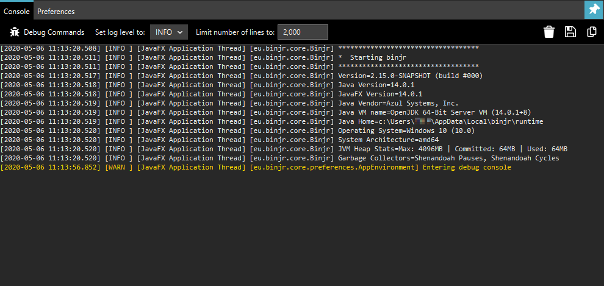
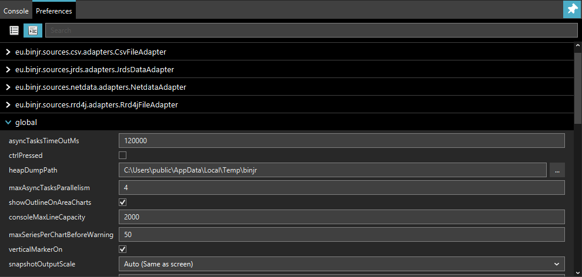

Troubleshooting¶
Reporting an issue¶
If you encounter an application crash, an unexpected behavior or think you’ve uncovered a bug in binjr, please report it using the project’s issue tracker, located at:
You can also use the issue tracker to suggest new features or enhancements to existing ones.
Consulting the application’s logs¶
If you encounter a problem while using binjr, you may want to consult the application’s logs to try and find out more about what’s causing the issue.
By default, events are logged into the system’s temporary folder, into a binjr subfolder.
binjr log files have names that follow the pattern: binjr_PID_YYYY-MM-DD_HH-mm-SS.log
By default, only log files from the latest ten sessions are kept in this folder.
Using binjr’s debug console¶
You can invoke the binjr debug console by pressing F12
The Console tab on the console show the last events logged for the running session.
From this screen you can also change the verbosity level (default is INFO).

Note
Although the logs’ output in the debug console is truncated to a configurable number of lines, it always appears in full in the log files.
The Preferences tab allows you to change all of binjr’s settings, including some that are not exposed in the
Setting panel.

Warning
Please proceed with caution when changing undocumented settings from the debug console, as it may affect the stability and performance of the application.
Common issues¶
SSL/TLS and certificates¶
If a certificate validation fails because a root CA certificate cannot be found in the certification path, you may need to import it into the JVM’s trusted CA store (of course, only do that if you trust that CA) :
Kerberos authentication¶
If you’re having roubles when trying to access a source that authenticates users via Kerberos, please try the following:
Enable kerberos debug information
This makes for much easier troubleshooting
Make sure the information in krb5.ini/krb5.conf is correct. To override the default location for the krb5 configuration file, use:
Info
Refer to http://web.mit.edu/kerberos/krb5-1.4/krb5-1.4.1/doc/krb5-admin/krb5.conf.html for more info on how to configure Kerberos.
Override JAAS configuration
If you need to override the JAAS login configuration, use the following property to target the new config file:
Ensure you have a valid ticket
If configuration is correct and a TGT (Ticket granting Ticket) is present in Kerberos credential cache but Single
Sign On still fails (e.g. you are prompted with request for credentials), you may need to refresh the cache’s ticket
using kinit.
Tip
If you’re facing that issue under Windows, you may want to clear Java’s specific ticket cache if it exists (by
default %USERPROFILE%\krb5cc_[username]) to ensure TGT is retrieve from the LSA (Local Security Authority) instead.
Windows and Java 12 and prior
Note
These issues no longer apply on OpenJDK 13 and later, since binjr will then use the new native GSS-API implementation introduced in Java 13 (https://bugs.openjdk.java.net/browse/JDK-6722928)
If you are running on Windows, you will likely need to modify the following registry key to allow the app to establish a session using the TGT recovered from the LSA (Reference: http://web.mit.edu/kerberos/kfw-3.2/kfw-3.2/relnotes.html#mslsa):
If binjr still fails to authenticate using the TGT retrieved from the Local Security Authority (LSA), but you can log if entering the same set of credentials when prompted, check whether the account you’re using belong the local groupAdministrators.If it is the case, you may need to run the application with elevated UAC privileges to allow proper operation of Single Sign On, as Microsoft introduced further restriction on accessing the LSA’s ticket cache for members of that group in Windows Vista and later (Reference: http://web.mit.edu/kerberos/kfw-3.2/kfw-3.2/relnotes.html#mslsa).
Check the Java Cryptographic Extensions (JCE)
If authentication still fails, including after you’ve provided a set a valid credentials and you’re sure the
configuration is correct, it might be because you’re current JVM is not capable of handling the encryption type
requested by the KDC.
In this case you may need to install the JCE (Java Cryptographic Extensions) Unlimited Strength Jurisdiction Policy
Files from your JVM’s vendor.
JavaFX¶
Warning
The following only applies for versions of binjr prior to v2.0.0, built against Java 8.
Starting with version 2.0.0, binjr only runs with Java 11 and will not run on previous version of Java
With this release, JavaFX no longer needs to be explicitly added to your JRE as it handled as any other dependencies
binjr relies on JavaFX for its user interface if is not present, it will fail to start.
As of version 8, JavaFX is distributed by default in Oracle’s JRE on all supported platforms. Unfortunately, it is not the case with the OpenJDK runtime environment provided with most Linux distributions.
In this case, you can either:
- Install the Oracle JRE for your platform.
- Build or install a prebuilt package for OpenJFX.
For instance, if you’re running Ubuntu 16.04, OpenJFX can be installed via: